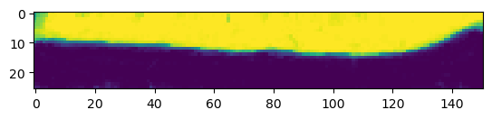

metadata_dict = {'filename': 'datasets/basics_example/basics_example',
'resolution_in_microns': (1, 0.36, 0.36), # you can typically get this from the .tif metadata
'subsampling_factors': (1, 1/3, 1/3),
'normal_offsets':np.linspace(-2, 2, 5) # normal offsets for map projection, in microns
}Image I/O
Load, save, and normalize images
In this notebook, we define several functions for image and metadata loading and saving, as well as image normalization, and show how to use them with the data from the basics_example folder.
deprecated
deprecated (func)
This is a decorator which can be used to mark functions as deprecated. It will result in a warning being emitted when the function is used.
Image reading and normalization
adjust_axis_order
adjust_axis_order (image, channel_axis=None)
*Adjust axis order of image (numpy array) so that the channel axis is axis 0.
If the channel axis is not specified, it is inferred as the axis with the smallest number of entries. this function adds a singleton dimension if the image contains a single channel. Axis order is otherwise left unchanged. Image must have 3 axes (single channel volumetric) or four axes (multichannel volumetric).*
| Type | Default | Details | |
|---|---|---|---|
| image | |||
| channel_axis | NoneType | None | |
| Returns | transposed image: np.ndarray with 4 axes | Input image, channel now axis 0. |
Load and subsample data for segmentation
Let’s load an example dataset. We then enter the relevant metadata - the filename, resolution in microns, and how much we want to subsample for segmentation purposes.
image = adjust_axis_order(imread(f"{metadata_dict['filename']}.tif"))
print("image shape:", image.shape) # image shape - spatial axes are in z-x-y orderimage shape: (2, 26, 454, 511)subsample_image
subsample_image (image, subsampling_factors, use_block_averaging_if_possible=True)
*Subsample (downscale) image by given factors.
Reduce image size by given factors along each dimension. The subsampling_factors need to be smaller than 1. If the image is large, subsampling can be performed by block averaging, which is much faster. In this case, you need to use inverse integer rescaling factors (e.g. 1/2, 1/3). If the number of pixels is not divisible by those factors, the subsampled image is padded by 0.
Important: the chanel axis must be axis 0 (automatically done by adjust_axis_order)!*
| Type | Default | Details | |
|---|---|---|---|
| image | |||
| subsampling_factors | list or tuple of float or int | Subsampling factors along each axis. A factor of 1/2 will reduce image size by 2x along that axis. | |
| use_block_averaging_if_possible | bool | True | Use fast block averaging if subsampling_factors are inverses of integers. |
| Returns | subsampled_image: np.ndarray | Subsampled imaged |
normalize_mean_std
normalize_mean_std (image, channel_axis=None)
Normalize a multi-dimensional image by setting mean to 0 and std dev to 1.
| Type | Default | Details | |
|---|---|---|---|
| image | np.array | Multi-dimensional image. The first axis needs to be the channel axis. | |
| channel_axis | NoneType | None | If None, the image is assumed to have only a single channel. If int, indicates the position of the channel axis. Each channel is normalized separately. |
| Returns | np.array | Normalized image, the same shape as input |
normalize_quantiles
normalize_quantiles (image, quantiles=(0.01, 0.99), channel_axis=None)
Normalize a multi-dimensional image by setting given quantiles to 0 and 1.
| Type | Default | Details | |
|---|---|---|---|
| image | np.array | Multi-dimensional image. | |
| quantiles | tuple | (0.01, 0.99) | Image quantile to set to 0 and 1. |
| channel_axis | NoneType | None | If None, the image is assumed to have only a single channel. If int, indicates the position of the channel axis. Each channel is normalized separately. |
| Returns | np.array | Normalized image, the same shape as input |
read_h5
read_h5 (filename)
Read .h5 file (e.g. ilastik output) into numpy array. Loads alphabetically first entry in .h5.
write_h5
write_h5 (filename, image, h5_dataset_name='image', axis_order='CZYX')
Write image (numpy array) as .h5 file (e.g. as input for ilastik).
| Type | Default | Details | |
|---|---|---|---|
| filename | str | ||
| image | np.array | Multi-dimensional array | |
| h5_dataset_name | str | image | |
| axis_order | str | CZYX | “Meaning” of each array axis. ‘C’=channel, ‘X’,‘Y’,‘Z’= spatial axis, ‘T’=time. This is important if you want to use the .h5 as input for an ilastik model. |
| Returns | None |
Creating a 3d segmentation
Now create a 3d segmentation, in this case using ilastik. ilastik works best with input saved as .h5 data sets. We first subsample the data, and the save it as a .h5.
subsampled_image = subsample_image(image, metadata_dict['subsampling_factors'],
use_block_averaging_if_possible=False)
print("subsampled image shape:", subsampled_image.shape)subsampled image shape: (2, 26, 151, 170)# We now save the subsampled image as a .h5 file for input into ilastik for segmentation
write_h5(f"{metadata_dict['filename']}_subsampled.h5", subsampled_image)# After creating an ilastik project, training the model, and exporting the probabilities, we load the segmentation
segmentation = read_h5(f"{metadata_dict['filename']}_subsampled-image_Probabilities.h5")
segmentation = segmentation[0] # Select the first channel of the segmentation - it's the probability that a pixel
# is part of the sample
print("segmentation shape:", segmentation.shape)segmentation shape: (26, 151, 170)# look at the segmentation in a cross-section
plt.imshow(segmentation[:,:,50], vmin=0, vmax=1)
Image and metadata writing
save_dict_to_json
save_dict_to_json (filename, dictionary)
*Save dictionary to .json file.
Will automatically convert numpy arrays to lists for saving. If you get an error like “XXX is not JSON serializable”, you need to ensure all your dictionary items are things that can be saved to text by json (strings, numbers, lists).*
| Type | Details | |
|---|---|---|
| filename | str | Filename to save to |
| dictionary | dict | Dictionary to save |
| Returns | None |
save_stack_for_blender
save_stack_for_blender (image, directory, normalization=(0.01, 0.99))
*Save multichannel volumetric image as a series of grayscale .png images. Can normalize data if desired.
This function necessarily converts the image to 8 bit. Use a suitable normalization to ensure nothing is lost.*
| Type | Default | Details | |
|---|---|---|---|
| image | 4d np.array | Axis 0 is assumed to be the channel axis, axis 1 is the slicing axes, i.e. images will correspond to slices along axis 1. |
|
| directory | str | Path to save data to. Will create a directory if it doesn’t exist | |
| normalization | tuple | (0.01, 0.99) | Whether to normalize the image before saving it. If None, no normalization is performed. If a tuple is given, it will be interpreted as quantiles to set to 0 and 255, respectively (over the whole channel, not each slice). If a callable is provided, it will be applied to each channel. |
| Returns | None |
normalize_quantiles_for_png
normalize_quantiles_for_png (image, quantiles=(0.01, 0.99))
*Normalize an image by setting given quantiles to 0 and 255 and converting to 8-bit, for saving as .png
Also replaces nan by 0.*
| Type | Default | Details | |
|---|---|---|---|
| image | np.array | Image (should be single-channel) | |
| quantiles | tuple | (0.01, 0.99) | Image quantile to set to 0 and 255. |
| Returns | np.array | Normalized image, datatype np.uint8 |
save_for_imageJ
save_for_imageJ (filename, image, z_axis=None, channel_axis=None)
*Save image as 32bit ImageJ compatible .tif file
If channel_axis is not provided, it is inferred as the shortest axis. If z_axis is provided for a 4d array, it will be set as the default z-axis for ImageJ.*
Saving results
We want to save the cartographic projections we will create both as .tif stack for quantitative analysis and as .png’s for visualization as mesh texture in blender. We will also save the metadata to a .json file
Annoyingly, we have to normalize our data and convert it to 8-bit to save it as png.
# save metadata
save_dict_to_json(f"{metadata_dict['filename']}_metadata.json", metadata_dict)# read some data so we can check the saving function
projected_data = adjust_axis_order(imread(f"{metadata_dict['filename']}_projected.tif"))
print("Image shape", projected_data.shape)Image shape (2, 5, 256, 256)save_for_imageJ(f"{metadata_dict['filename']}_projected.tif", projected_data, z_axis=1)texture_path = f"{os.getcwd()}/{metadata_dict['filename']}_textures"
save_stack_for_blender(projected_data, texture_path, normalization=(0.01, 0.99))